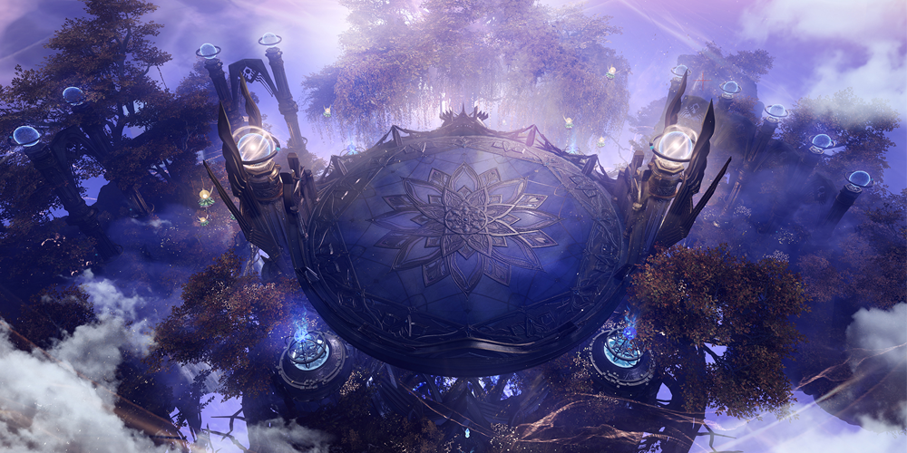
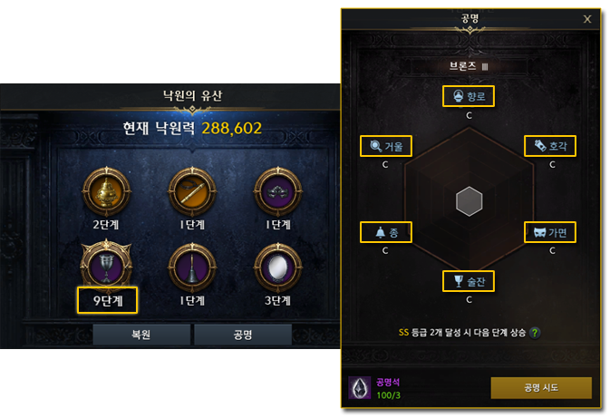
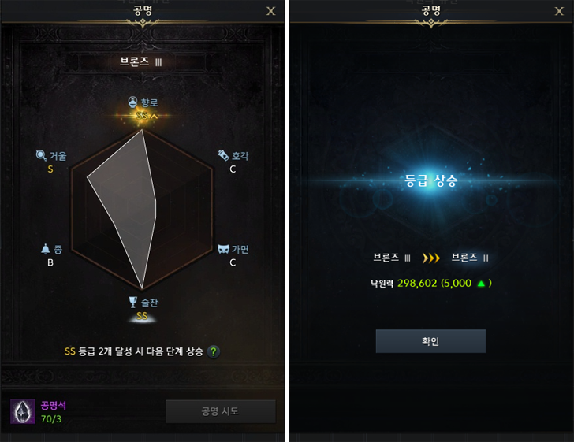
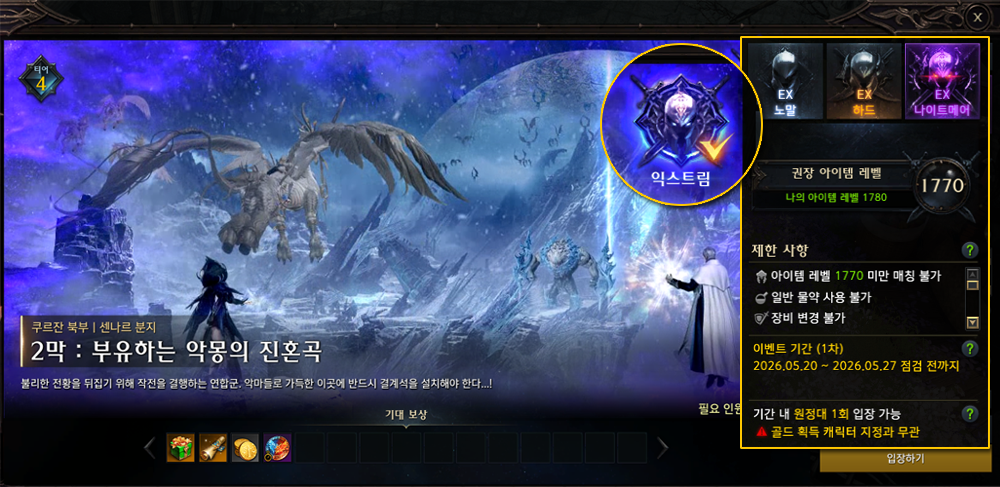
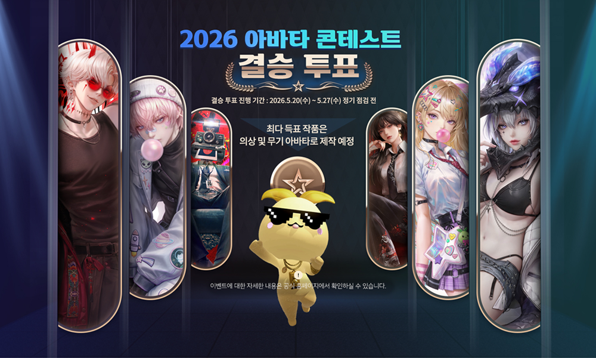
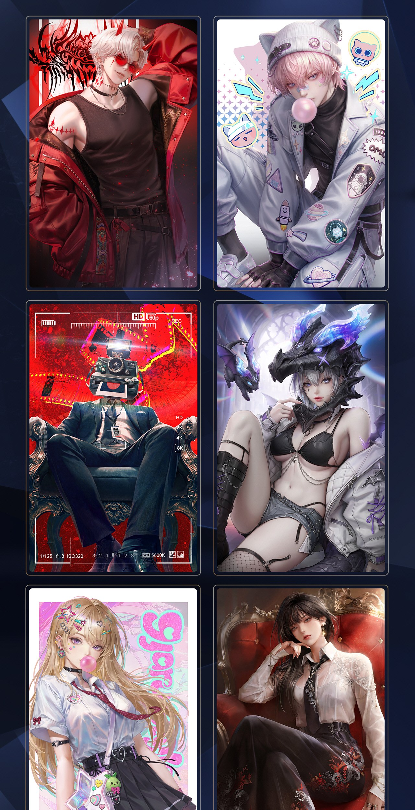

Korean Lost Ark · Patch Translation
May 20 (Wed) Update Details
Translated for readability with the meaning preserved — not a word-for-word rendering of Korean phrasing. Class, skill, raid, item, and location names use the official NA localization (verified against the game files); where a term is brand-new KR content with no NA name yet, the closest translation is used and flagged.
Contents
- Content Update
- Paradise Season 3 Start
- Kazeros Raid Act 2 Extreme Added
- 2026 Avatar Contest Finals Vote
- Improvements & Bug Fixes
Hello, this is Lost Ark. The May 20 regular maintenance ended at 10:00. Here is everything that changed in the update.
Content Update — Paradise Season 3 Start

Paradise Season 3 has begun.
Paradise Season 3 runs 2026-05-20 (Wed) until the 2026-09-02 (Wed) regular maintenance.
The season is 15 weeks long — one week shorter than the previous season. When Heaven Stage 10 opens in the 7/8 (Wed) update, an item that restores Heaven challenge attempts will be added.
Heaven
- Heaven entry count has been reset to 5.
- Heaven now goes up to Stage 10. As of the 5/20 update, Stages 1–3 are open; one more stage opens at each following regular maintenance.
Proof
- The Season 3 Proof ranking begins with the new season.
- Proof now goes up to Stage 15. As of the 5/20 update, Stages 1–3 are open; one more stage opens at each following regular maintenance.
Hell & Naraka
- An item level 1750 bracket has been added to Hell / Naraka Keys.
- The types and quantities of the ‘Gem Selection Chest’ that drops from Hell / Naraka have been partially changed.
- The ‘Refined Stone of Fate’ and ‘Refined Stone of Chaos (Weapon / Armor)’ that dropped from Hell / Naraka are now merged into one ‘Refined Stone of Chaos / Stone of Fate Selection Chest’ — pick the single reward you want from it.
- A new card pack, the ‘Aspiration Legendary Card Pack’, can now drop from Naraka.
Paradise Orb
- The Season 3 ‘Paradise Orb’ is now obtainable — 2 in total, one each for clearing Proof Stage 3 and Stage 6.
- Orbs from Paradise Seasons 1 and 2 still work as before, but their maximum Paradise Power is now fixed — their effect can no longer be increased.
- Season 1 and 2 Orbs can be sold to an NPC shop.
Legacy of Paradise Changes
- Some base effects and some restoration-stage effects on Legacy of Paradise have been changed.
- The six Legacy types — Censer, Whistle, Mask, Chalice, Bell, and Mirror — now each have their own unique Resonance effect.
- The element and trait attributes on Legacy of Paradise Resonance effects have been removed.
Legacy of Paradise — Resonance System Rework
How Resonance progresses has changed:
| Before | After |
|---|---|
| Resonance was tracked separately for each of the 6 Legacy types. | Resonance is tracked once, on a single unified track shared by all 6 Legacy types. |

- The unlock condition changed to match: Resonance becomes available once any one of the 6 Legacies reaches Restoration Stage 9. Resonance effects, however, only apply to Legacies that are at Restoration Stage 9 or higher.
- Performing Resonance consumes Resonance Stones; the amount consumed scales with your ‘Breakthrough stage’.
- Each Legacy’s performance rises with its Resonance rank. Ranks run C / B / A / S / SS.
- Each time you perform Resonance, 2 random Legacies (of the 6) shift rank by the following odds:
| Result | Chance |
|---|---|
| +2 ranks | 5% |
| +1 rank | 45% |
| No change | 35% |
| −1 rank | 15% |
These shifts happen regardless of your Breakthrough stage.

- Resonance now has a ‘Breakthrough stage’. There are 16 in total: Bronze I–III, Silver I–III, Gold I–III, Platinum I–III, Diamond I–III, and the Sidereal stage.
- A higher stage’s C-rank effect is equal to or stronger than a lower stage’s SS-rank effect.
- When Resonance brings 2 of the 6 Legacies to SS rank, your Breakthrough stage advances and every Legacy’s rank resets to C.
Other Paradise Changes
- With the new item level 1750 Hell Key bracket, Legendary / Heroic grade Hell Key IV has been added to the Paradise content shop’s Key Exchange tab. Exchange for them using the Ebony Cube ‘4th Unlock’ entry ticket.
Content Update — Kazeros Raid Act 2 Extreme

‘Kazeros Raid Act 2 Extreme’ has been added — limited-time content that runs for 4 weeks.
Challenge period: after the 2026-05-20 (Wed) regular maintenance until the 2026-06-17 (Wed) regular maintenance.
- It has Normal, Hard, and Nightmare difficulties.
- Enter it by pressing the ‘Extreme’ button on the entry UI for Kazeros Raid ‘Act 2: Requiem of the Floating Nightmare’.
- To challenge it, reach the recommended item level for the difficulty and complete the main quest ‘The Path We Must Walk’.
| Difficulty | Players | Item level |
|---|---|---|
| Normal | 8 | 1720+ |
| Hard | 8 | 1750+ |
| Nightmare | 8 | 1770+ |
- It can be entered once per week per roster. Normal, Hard, and Nightmare share that single weekly attempt.
- Normal and Hard use the individual revive system — the same one in the existing Kazeros Raid Normal / Hard, usable once per character. Nightmare does not have individual revives.
Rewards
- Defeating ‘Phantom Manifester Brelshaza’ grants gold and the ‘Coin of Fire and Ice’ token:
| Difficulty | Gold | Coin of Fire and Ice |
|---|---|---|
| Normal | 20,000 | ×150 |
| Hard | 45,000 | ×200 |
| Nightmare | 45,000 | ×200 |
- A one-time first-clear reward is granted the first time you defeat ‘Phantom Manifester Brelshaza’, on any difficulty.
- The first Nightmare clear additionally grants the Legendary-grade title ‘Lord of the Bitter Cold’.
- Clear rewards always include gold, whether or not gold acquisition is designated.
- ‘Coin of Fire and Ice’ can be spent at the Kazeros Extreme crafting NPC in major cities. A ‘Bracelet Effect Reconversion Ticket Chest’ has been added to that NPC’s craft list — craftable once per week per roster.
- The weekly craft limit for the ‘Metallurgy Selection Chest V’ and ‘Tailoring Selection Chest V’ has been raised from 2 to 4 per roster.
Content Update — 2026 Avatar Contest Finals Vote

The 2026 Avatar Contest finals vote is underway.
Finals vote period: after the 2026-05-20 (Wed) regular maintenance until the 2026-05-27 (Wed) regular maintenance.
- Enter the vote via the ‘Avatar Contest’ button on the left of the in-game minimap.
- Any adventurer with an item level 1680+ character on their account can take part.
- You may vote for up to 3 entries, and duplicate or split voting is allowed.
- Within each gender group (male / female), you may cast up to 2 of your votes — including up to 2 on a single entry.
- Votes cannot be edited or withdrawn once cast, so choose carefully.
The tally is disclosed daily at 06:00 from 5/21 (Thu) through 5/24 (Sun) 05:59, showing the cumulative count through the previous day. From 5/24 (Sun) 06:00 to 5/27 (Wed) 05:59, the count frozen at 5/24 05:59 remains viewable.
The single male entry and single female entry with the most votes become the final winners. They will later be produced as one male and one female costume avatar, plus weapon avatars suited to each class.
See the second tab above — 2026 Avatar Contest — Finals Vote — for the full event guide.
Improvements & Bug Fixes
Content
- Kazeros Raid ‘Denouement: Final Day’, Hard, Gate 2: when ‘Death Incarnate Kazeros’’s HP drops to 1 and the phase-transition cutscene plays, characters now take no damage for the duration of the cutscene. The protection is removed once the phase changes and combat resumes.
- Abyssal Dungeon ‘Cathedral of the Horizon’, Gate 1: fixed a bug where ‘Archbishop Arsenos’’s spinning-hammer-throw-then-teleport pattern could still intermittently hit characters who had landed a successful Just Guard.
- Shadow Raid ‘Witch of Agony, Serca’: fixed a bug where, if you died with no revives left and your revive count recharged at the exact moment a cutscene played, the revive UI sometimes failed to appear after the cutscene.
- Kazeros Raid ‘Act 2: Requiem of the Floating Nightmare’, Single Mode, Gate 1: applied a further fix for a recurring bug where the ice-wall trap mechanic could, at low probability, leave a character stuck.
- Paradise: Proof: fixed the entry item-level requirement so it checks your achieved item level rather than your equipped item level.
Combat / Combat Analyzer
- Fixed a bug where damage-over-time from the following did not count toward MVP ‘Supporter’ contribution:
- Skill Runes ‘Bleed’ and ‘Poison’
- Reaper’s ‘Bleeding Poison’ and ‘Corrosive Poison’ tripods
- Fixed a bug where reducing certain damage taken by party members (via ‘damage taken reduction’ effects) did not count toward MVP ‘Guardian’ contribution.
- Fixed a bug where, when Bard applied the damage-increase buffs from ‘Serenade of Courage’ and ‘Major Chord’ at the same time, the Combat Analyzer’s ‘Supporter Damage Increase Effective Rate I’ irregularly credited the increase to only one of the two skills.
- Guardian Knight: immediately after entering ‘Incarnation Mode’, the mode can no longer be cancelled with the Identity key for at least 0.5 seconds, regardless of cooldown.
System
- When you open the Market / Auction House while using Storage through the Pet function, you can now register items to the Market / Auction House with the ‘Item Registration’ window already open.
- On Snowpang Island, if the co-op quest ‘Snowball Fight, Start!’ ends while your character is dead, the character is now revived automatically.
- Trying to craft while some required materials are locked now shows an appropriate system message.
- Fixed a bug where receiving items from the product box with a full inventory did not show the related guidance pop-up.
- Fixed a bug in ‘Windowed Mode’ where left- or right-clicking the ground in the Trixion training room could intermittently fail to register.
UI
- The Content Guide, Kazeros battlefield board, and Core Content UI can no longer be opened inside Guardian Raid zones.
- When you open the Market from the Avatar Codex UI (called via the Pet function), the inventory UI now opens alongside it each time you attempt item registration.
- Fixed a bug where closing the Avatar Codex UI also closed the Market / Auction House UI when both were open at once.
- Fixed a bug in the Tortoyk Wandering Merchant’s hover tooltip where the Uncommon-grade ‘Egg of Creation’ card was sorted above higher-grade cards.
- Fixed a bug where some Wandering Merchant symbols could, at low probability, fail to appear on the world map even though the merchant had spawned.
- Fixed a bug in Paradise: Proof where opening the Guild UI during the post-‘Start’ countdown left the countdown UI on screen even after the run began.
- Fixed a bug where the Style Book could not be closed with ESC while customizing during new character creation.
- The ‘Market Search’ option no longer appears in the context menu of the ‘Romantic Ingredient Kit’ in the Sidereal Weapon Evolution UI’s material area — the item is character-bound on acquisition and cannot be traded.
Sound
- Fixed a bug where a certain sound effect looped when Summoner used the ‘Steed Charge’ base skill or applied the ‘Destruction Charger’ tripod.
- Fixed a bug in Kazeros Raid ‘Act 2: Requiem of the Floating Nightmare’, Gate 1, where a sound in the ‘Sky Path’ traversal section could intermittently play far too loud.
- Fixed a bug where a certain skill from a certain monster in Paradise: Hell / Naraka played somewhat too loud.
Graphics / Avatar
- Fixed a bug in Kazeros Raid ‘Act 1: Earth-Shattering Hellfire’, Gate 1, Phase 3, where restarting the dungeon while a Hidden Sidereal skill was in use could intermittently set the camera viewpoint incorrectly.
- In some content, a boss’s enrage-start visual effect no longer replays repeatedly depending on the monster’s state.
- Fixed a bug where white or gray furnishings placed in the Stronghold displayed somewhat darker than their actual color.
- Fixed a bug where changing your avatar while in matchmaking (via Group Support) still showed your pre-change avatar in the Party Lounge.
- Fixed a brief screen flicker when returning to the Battle Preparation room after failing Gate 1 of Kazeros Raid ‘Act 3: Night of Storms and Darkness’.
- Fixed a bug where a Martial Artist (male) character’s index finger bent too far backward during the ‘Wave’ emote.
- Fixed a bug where part of the back of the hair clipped through when an Artillerist wearing the ‘Daily Casual Hair’ avatar performed combat motions.
- Fixed a bug where a character’s shadow displayed awkwardly when ‘Shurdi’ attacked on certain terrain while playing Paradise: Hell as a Summoner.
- Adjusted the virtue values of the two ‘Non-Tradable’ Wildsoul weapon avatars below to match other Non-Tradable weapon avatars:
- Sakura Enchanter Scroll — was Courage +10, Charisma +5 → now Charisma +5, Kindness +10
- Starlight Enchanter Scroll — was Courage +10, Charisma +5 → now Charisma +5, Wisdom +10
Items
- Removed two no-longer-used items — ‘Splendid Feather’ and ‘Alaqer Egg’ — from the inventory’s Material Storage > Voyage > Island Items tab. Any copies you held were converted, via Roster Storage, to 10 Silver per item.
- The ‘Courage Coin’ usage period ends at the 2026-05-27 (Wed) regular maintenance. When it expires, your Courage Coins and the ‘Proving Grounds Shop’ NPC will be removed — spend them before then.
PC Café Login Reward / Lucky Box Changes
- The PC Café 180-minute login reward changed from ‘Legendary ~ Rare Card Pack IV ×1’ to ‘Joyful Legendary ~ Rare Card Pack ×1’.
- Some [PC Café] Lucky Box contents changed:
- ‘Leap Legendary Card Selection Pack II ×1’ → ‘Leap Legendary Card Selection Pack III ×1’
- ‘Legendary Card Pack IV ×1’ → ‘Joyful Legendary Card Pack ×1’
- ‘Legendary ~ Heroic Card Pack IV ×1’ → ‘Joyful Legendary ~ Heroic Card Pack ×1’
- Any ‘[PC Café] Lucky Box’ not used before the 5/20 (Wed) maintenance was delivered to the product box in item form. Those boxes still hold the pre-5/20 contents. Claim them before the 2026-06-24 (Wed) regular maintenance, and use them within 14 days of claiming.
Other
- Fixed typos and awkward wording in some text.
- Fixed a bug in the North Kurzan world quest ‘Allied Forces Grand Council’ where, at the ‘Check where Kamain disappeared’ step, Kamain’s final line printed twice in the chat window.
- Corrected the ‘One Who Carries the Will’ title’s acquisition condition in the Title UI to match how it is actually earned — by evolving a Sidereal Weapon to Stage 2.
2026 Avatar Contest — Finals Vote Event
This is the companion event notice that the May 20 patch notes point to for full Avatar Contest details. The original is image-only; the text below is translated from that image.
Finals vote period: 2026-05-20 (Wed) until the 2026-05-27 (Wed) regular maintenance.
Event Schedule
| Phase | Period |
|---|---|
| 1 vs 1 Judging | 5/6 (Wed) until the 5/13 (Wed) regular maintenance |
| Finals Vote | After the 5/20 (Wed) regular maintenance until the 5/27 (Wed) regular maintenance |
| Winner Announcement | Announced separately after judging and voting conclude |
Final Winning Entry Production
- What gets produced: the male and female entries with the most votes in the finals vote.
- Produced as: one male and one female costume avatar, plus weapon avatars suited to each class.
- Depending on production conditions and other factors, the finished avatars may differ somewhat from the original artwork, and the production quantity may change.
How to Participate
Log into the game and click the ‘Avatar Contest’ icon on the minimap.
Step 1 — 1 vs 1 Judging
- Across 3 one-vs-one matchups, PICK the entry that should advance to the finals vote.
- Give each entry a star rating, and submit your judging and evaluation comments.
- Tip: use ‘View details’ to see an entry’s finished artwork and sketch stages.
- Tip: evaluations can be edited throughout the 1 vs 1 judging period; whatever you last entered is submitted automatically when the period ends.
Step 2 — Finals Vote
- The 6 entries that pass 1 vs 1 judging advance to the finals vote.
- You get 3 voting tickets per account: one for a male avatar, one for a female avatar, and one free-choice ticket.
- The free-choice ticket can be cast as a duplicate or split vote within either gender group.
- Votes cannot be edited or withdrawn — choose carefully.
Checking Judged-Entry Details & the Tally
Adventurer Judging & Comments
- Each entry’s ‘View details’ page shows the average star rating and the comments adventurers submitted (for example, an average of ★★★★☆ 4.10 / 5).
Finals Vote Tally
- Use the ‘View tally’ button to check the in-game Avatar Contest finals-vote count.
- Viewable 5/21 (Thu) 06:00 through 5/24 (Sun) 05:59 — each morning at 06:00, the cumulative count through the previous day is shown.
- Rankings and the tally are shown according to the gaps between vote counts.
2026 Avatar Contest Finalists — Preview
The 12 finalist entries (6 male, 6 female) as shown in the original notice. Artwork only — no translatable text.

Cautions
1 vs 1 Judging
- The entry that gets the most picks from adventurers in 1 vs 1 judging advances to the finals vote.
- Any adventurer with an item level 1680+ character on their account can take part.
- Star ratings can be set freely from 0.5 to 5 stars, and can be edited until the 2026-05-13 (Wed) regular maintenance ends.
- After 1 vs 1 judging ends and before the finals vote begins, you can review your own judging.
- Once the finals vote begins, judging can no longer be edited — it is kept for reference only.
- Entries that do not fit the evaluation’s purpose may be excluded from judging under game operation policy.
Finals Vote
- Any adventurer with an item level 1680+ character on their account can take part.
- You may vote for up to 3 entries — one male vote, one female vote, and one free-choice vote — with duplicate or split voting allowed:
- Up to 2 of your tickets per gender (male / female) group.
- Up to 2 of your tickets on the same entry.
- Votes cannot be edited or withdrawn once cast — choose carefully.
- Votes cast through inappropriate means are cancelled or invalidated.
- The average star ratings and comments shown during the finals vote are reference material only. Shown comments are drawn from what adventurers wrote on the avatars, with some processing applied, and some are published in edited form.
- The tally is disclosed on this schedule:
- 2026-05-21 (Thu) 06:00 – 05-24 (Sun) 05:59: the count through the previous day is shown daily at 06:00.
- 2026-05-24 (Sun) 06:00 – 05-27 (Wed) 05:59: the count frozen at 5/24 (Sun) 05:59 remains viewable.
- The disclosed tally stays viewable until the finals vote ends.
- The male entry and female entry with the most votes become the final winners.
- The winners are later produced as one male and one female costume avatar, plus weapon avatars suited to each class. The finished avatars may differ somewhat from the original artwork, and the production quantity may change.